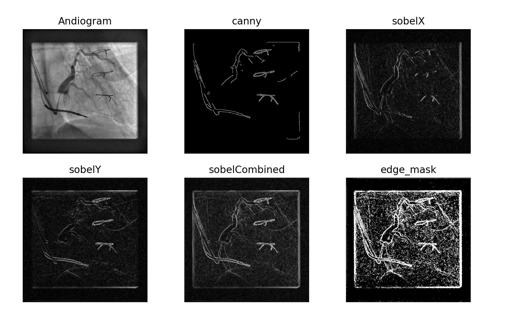

Experience - John Callaghan


I completed an internship with the School of Biological Sciences at the University of East Anglia (UEA). During this experience, I worked on a ESPRC research project focused on developing an interactive GUI for semi-automatically labeling X-ray image segmentation data using pre-trained deep learning models. This project aimed to significantly reduce the time and effort required for data labeling in medical imaging research

Throughout the internship, I enhanced my proficiency in Python programming and deep learning techniques, gained hands-on experience with computer vision applications, and learned to work with real-world data. I developed a user-friendly GUI, adapted state-of-the-art segmentation models, and conducted thorough validation to ensure high accuracy. This opportunity provided me with valuable insights into the practical challenges and solutions in a research environment.